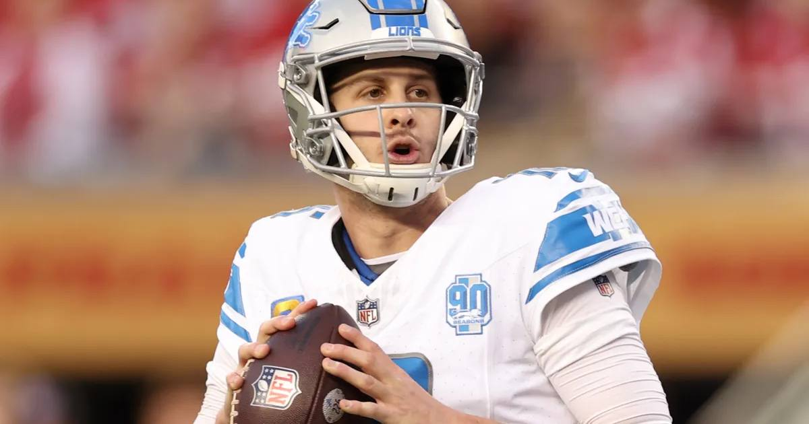

2-Leg Prop Combo: Goff Over 260.5 Passing Yards + Hockenson Over 39.5 Receiving Yards
Two passing-game props from the Vikings-Lions game, both off the same October 31 snapshot: Goff's yardage line and Hockenson's receiving line. Props only — no moneyline legs.

The game slip
Matchup: Minnesota Vikings (6-0) at Detroit Lions (4-2), Ford Field, Sunday at 1:00 PM ET on FOX.
Line: Detroit -3 | Total 46.5 | Moneyline: Lions -170, Vikings +142 (via ESPN scoreboard, DraftKings).
Minnesota injury report: Running back Aaron Jones is listed questionable with a knee issue, a status that could change the Vikings' rushing plan if he is inactive.
Detroit injury report: The Lions' secondary is banged up — Joseph is out and McCreary's status was in doubt heading into the weekend. Amon-Ra St. Brown, who tweaked an ankle after catching nine passes for 153 yards against Green Bay in Week 7, is not on the Lions' latest injury designations and is set to play.
Storylines driving the bet:
1. The NFL's last unbeaten team visits a home favorite, and a 46.5 total says the books expect points — points come from passing yards.
2. Jared Goff has hit the passing-yards over in 13 of his last 16 games, and he is at home, where Detroit's offense is at its best.
3. Minnesota's passing game has been grinding — Jefferson had four catches for 44 yards last week, and Murray attempted just 24 passes. If the Vikings are going to keep up at Ford Field, the ball has to go somewhere, and the tight end is the safety valve when the outside is covered.
The bet
Leg 1: Jared Goff Over 260.5 passing yards (-113, DraftKings, via Football Nation's October 31 snapshot). Goff at home, in a dome, against a Minnesota team that has to score to keep up. Thirteen overs in his last sixteen is not a fluke — it is a quarterback in a system built for exactly this. The line is 260.5, and Goff's recent form says that number is a touch low for a Ford Field game with a 46.5 total.
Leg 2: T.J. Hockenson Over 39.5 receiving yards (-114, FanDuel, via Football Nation's October 31 snapshot). Hockenson is Minnesota's release valve. When Jefferson draws the coverage and the pass rush gets home — Detroit has 21 sacks, tied for the league lead — the ball goes to the tight end underneath. Forty yards is four catches. If Minnesota is playing from behind in the second half, which the spread says is likely, Hockenson's volume only grows.
Both legs are props. No moneyline, no spread, no "just pick the winner" — this ticket lives or dies on two passing-game numbers, which is the whole point of going props-led.
The honest caveat, and it is a real one: these two legs are tied to the same game script. If this turns into a slow divisional grind — and divisional games do that, even at Ford Field — both legs can miss together. A low-possession game damages passing overs and shrinks the number of chances for receiving markets. And both lines come from an October 31 snapshot, not a live board — confirm the exact lines and prices in your book before playing, because a move to 270.5 on Goff or 44.5 on Hockenson changes the math. I am not stating a combined parlay price here because books price two-leg prop combos differently; check what your book is dealing and only play it if both legs are still at or near the numbers above.
If gambling stops being fun, call 1-800-GAMBLER.
Sources: Football Nation USA — Vikings at Lions player props, Win Daily — Vikings vs. Lions player props, ESPN NFL scoreboard, Week 8 (DraftKings odds)